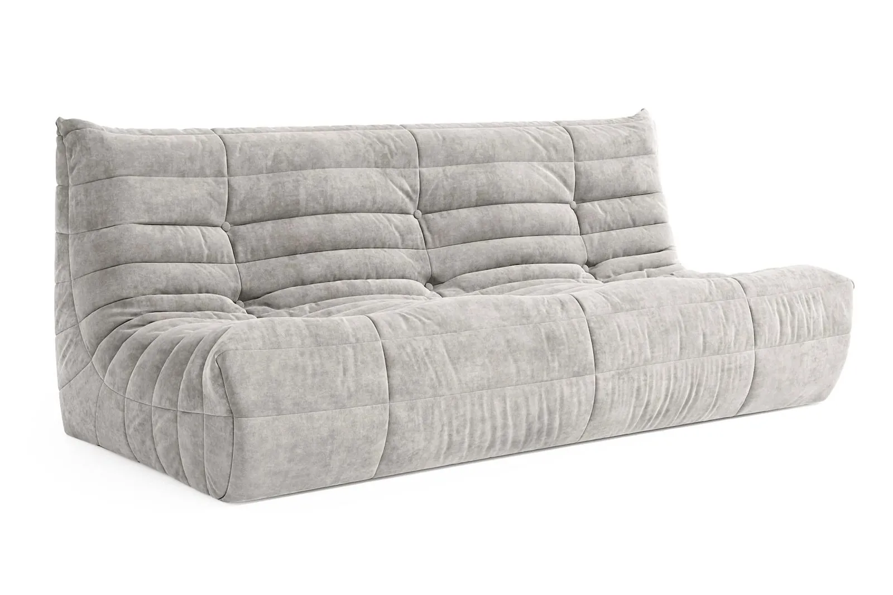

Как устроена бескаркасная мебель
У большинства моделей два слоя. Внутренний чехол удерживает наполнитель, внешний отвечает за внешний вид и принимает на себя всю нагрузку: пыль, трение, пятна. Наполнитель — обычно мелкие гранулы или мягкие волокна — со временем уплотняется, и мебель становится чуть ниже и плотнее.
Отсюда три задачи ухода: беречь внешнюю ткань, вовремя возвращать форму и следить за наполнителем. Перед любыми процедурами посмотрите ярлык на чехле: там указано, можно ли его стирать, при какой температуре и как сушить.
Ежедневный уход
Раз в несколько дней взбивайте мебель: приподнимите, встряхните и помните со всех сторон, чтобы наполнитель распределился равномерно. Так кресло или диван дольше сохраняют форму и не продавливаются в одном месте.
Пыль удобно собирать пылесосом с мягкой насадкой на минимальной мощности. Для велюра и других ворсовых тканей подойдёт щётка по направлению ворса. Не ставьте мебель вплотную к батарее и под прямые солнечные лучи: от жары и ультрафиолета ткань быстрее выгорает и пересыхает.

Пятна и чистка
Свежее пятно промокните салфеткой, не растирая. Затем аккуратно обработайте мягким мыльным раствором и снова промокните чистой влажной тканью. Агрессивные растворители и отбеливатели могут повредить волокна и цвет.
Если внешний чехол съёмный, его можно стирать по инструкции на ярлыке — обычно в деликатном режиме, вывернув наизнанку и застегнув молнию. Сушите чехол в расправленном виде, без батареи и сушильной машины, если ярлык этого не разрешает. Надевайте обратно слегка влажным: ткань легче расправится по форме.
Сложные пятна и дорогие ткани лучше доверить профессиональной химчистке.
Разные ткани — разный уход
Велюр и другие ворсовые ткани чистят мягкой щёткой по направлению ворса; после влажной обработки ворс расчёсывают, пока он не высох. Плотные рогожки и букле хорошо переносят пылесос, но не любят трения жёсткой щёткой — от него появляются катышки.
Экокожу и гладкие покрытия достаточно протирать влажной мягкой тканью и вытирать насухо. Независимо от материала перед первой чисткой проверьте средство на незаметном участке, например снизу или на внутреннем шве.
Наполнитель: когда добавлять
Со временем гранулы проседают — это нормально. Если мебель стала заметно ниже или потеряла упругость, наполнитель можно досыпать через внутренний чехол. Делайте это над большой ёмкостью или на улице: мелкие гранулы легко разлетаются.
Не переполняйте чехол. Бескаркасной мебели нужен небольшой запас свободного объёма, иначе она станет жёсткой и перестанет подстраиваться под тело.
Дети, животные и хранение
Острые предметы, когти и молнии на одежде — главные враги ткани. Если в доме есть кошка или собака, выбирайте плотные ткани с коротким ворсом и регулярно проверяйте швы.
Если мебель нужно убрать на время, почистите и полностью просушите чехол, храните её в сухом проветриваемом месте и не ставьте сверху тяжёлые предметы. Перед использованием снова взбейте — форма вернётся за пару минут.
Подобрать ткань под ваш образ жизни и узнать, какие модели IDODOM подходят для активного использования, можно у менеджера или в шоуруме в МЦ «Гранд-2».
Источник: блог IDODOM — «Правильный уход за бескаркасной мебелью», 04.04.2025. Текст на этой странице — пересказ, не копия.